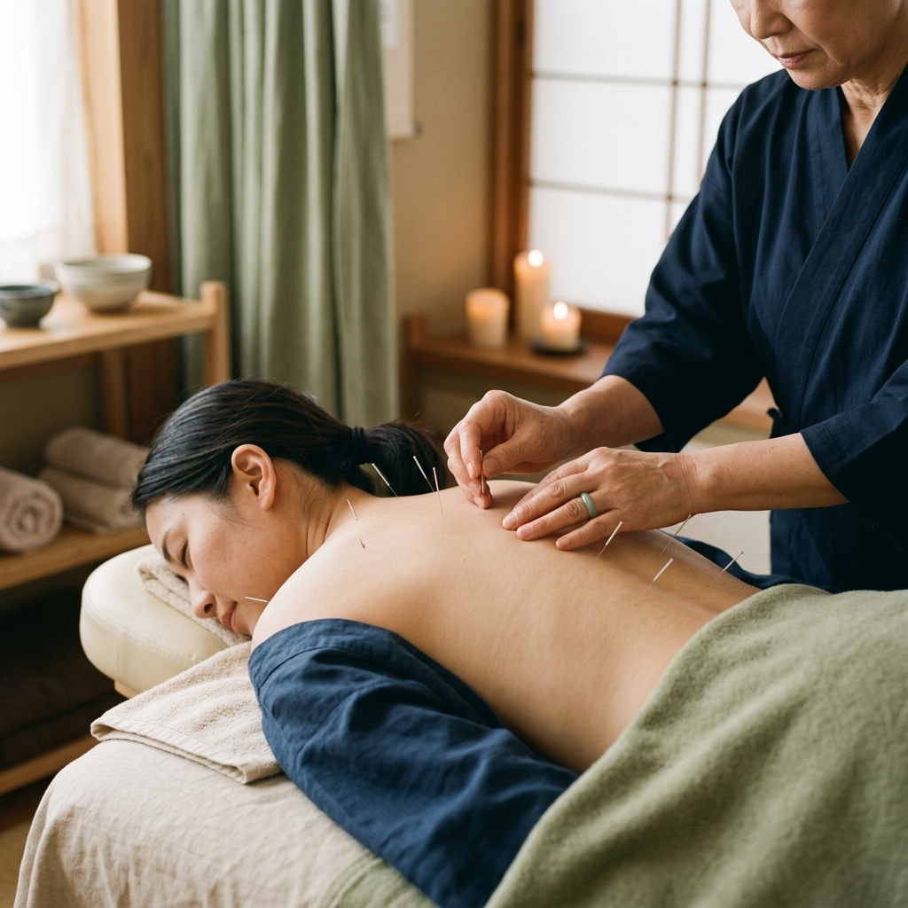
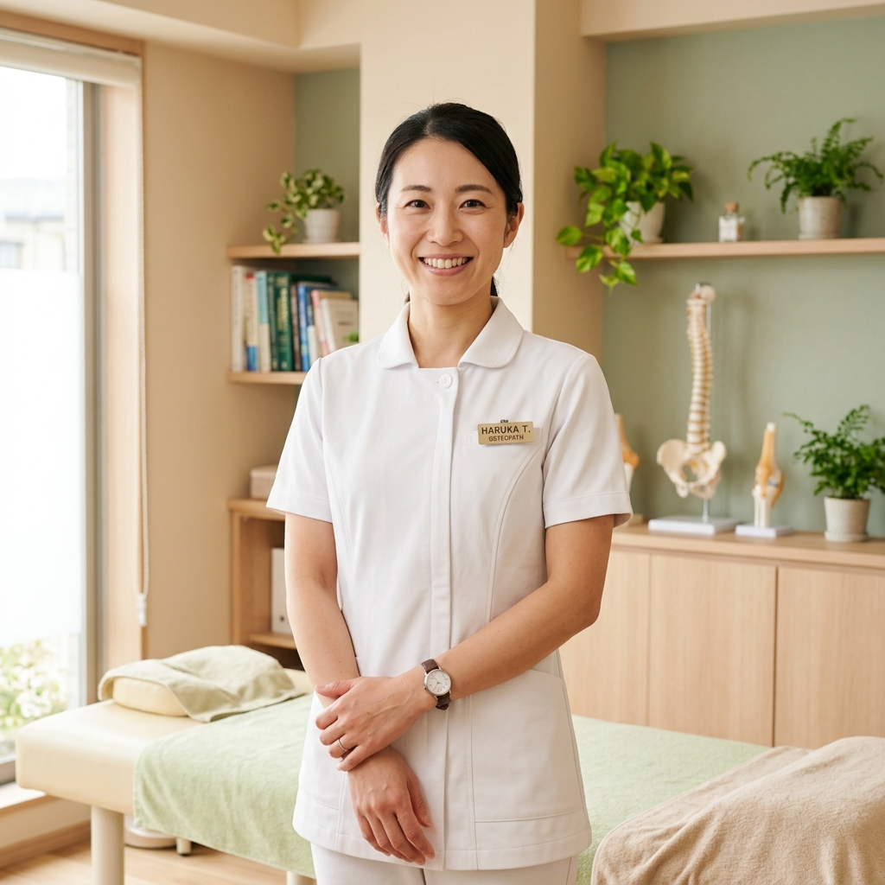
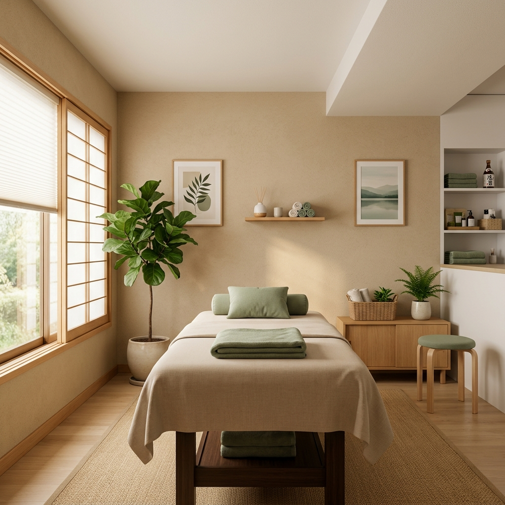

こんなお悩みはありませんか？
腰の重だるさ、肩のこわばり、長年の慢性痛…
みなと鍼灸整骨院は、そのお悩みにしっかり向き合います。
腰痛・ぎっくり腰
デスクワークや立ち仕事による慢性的な腰の痛み・重だるさ
肩こり・首の張り
長時間のPC作業やスマホ使用による肩・首まわりのつらいこわばり
慢性疲労・だるさ
休んでも疲れが抜けない、身体の芯に残るだるさや重さ
骨盤のゆがみ
産後の骨盤ケアや長年の姿勢の悪さによるゆがみ・バランスの乱れ
みなとが選ばれる4つの理由
症状に真摯に向き合い、あなたのペースに合わせて
無理のない施術でお体の回復をサポートします。
POINT 01
「聴く」ことを大切にした
丁寧な問診
同じ腰痛でも、痛みの原因や度合いは人それぞれ違います。初回はじっくり時間をかけてお話を伺い、症状の背景にある本当の原因を丁寧に探っていきます。患者さまの言葉を大切に、納得のいく施術プランをご提案します。

POINT 02
身体への負担が少ない
やさしい施術
最小限の刺激で最大限の効果を引き出す施術を心がけています。「鍼が怖い」「強い力でもまれるのが苦手」という方でも安心してお越しください。身体の状態をしっかり見極めながら、丁寧に施術を進めます。

POINT 03
国家資格保有のスタッフが
毎回担当
施術を担当するのは、鍼灸師・柔道整復師の国家資格を持つスタッフのみ。初回から継続して同じスタッフが担当するため、身体の変化を継続して把握し、一人ひとりに合った最適な施術を提供します。

POINT 04
駅チカ・完全予約制で
通いやすい環境
JR大阪駅からわずか徒歩1分。完全予約制のため待ち時間なく、仕事帰りや昼休みにも無理なく通っていただけます。清潔でゆったりとした空間で、心身ともにリラックスして施術を受けていただけます。


お客様の声
施術を受けられた患者さまの生の声をご紹介します。
10年以上悩んでいた腰痛が、数回の施術で劇的に楽になりました。先生がいつも話をしっかり聞いてくださるので、通うのがつらくありません。
肩こりがひどくて毎日頭痛もあったのですが、鍼灸を試してみたところ嘘のように楽になりました。駅から近いので仕事帰りに寄れるのも助かります。
産後の骨盤ケアで通っています。施術後は身体が軽くなり、育児中の腰の疲れも格段に減りました。子連れでも気を遣わず通えてとても助かっています。
アクセス・診療時間
みなと鍼灸整骨院
- 住所
- 〒530-0001
大阪府大阪市北区梅田3丁目1-1
（JR大阪駅 徒歩1分） - 電話番号
- 06-XXXX-XXXX
- 定休日
- 水曜日・日曜日・祝日
| 診療時間 | 月 | 火 | 水 | 木 | 金 | 土 |
|---|---|---|---|---|---|---|
| 9:00〜13:00 | ○ | ○ | － | ○ | ○ | ○ |
| 15:00〜20:00 | ○ | ○ | － | ○ | ○ | ※ |
※土曜日午後は14:00〜17:00（最終受付16:30）